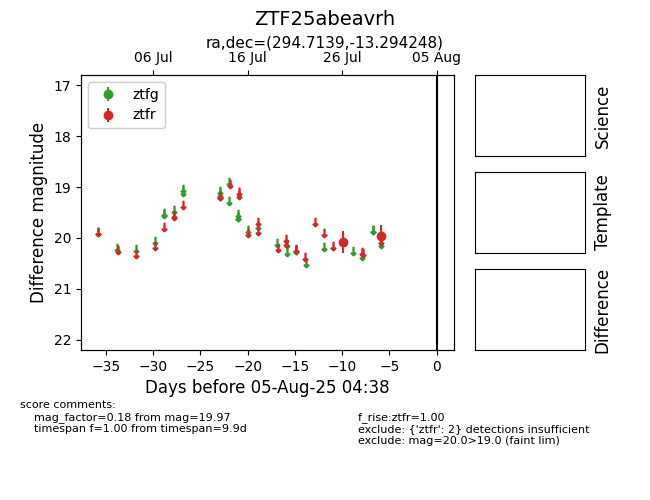

Target ZTF25abeavrh at 2025-08-05 04:38, see:
FINK: fink-portal.org/ZTF25abeavrh
Lasair: lasair-ztf.lsst.ac.uk/objects/ZTF25abeavrh
ALeRCE: alerce.online/object/ZTF25abeavrh
alt names
ZTF25abeavrh (ztf,fink)
coordinates:
equatorial (ra, dec) = (294.7139,-13.29425)
galactic (l, b) = (26.1366,-16.42631)
photometry
last ztfr=19.97
2 ztfr detections
